Las fiestas de España que tienen declaración oficial
Folklorius es un portal de divulgación sobre la fiesta tradicional española. Aquí solo entra lo que tiene reconocimiento oficial — Interés Turístico Internacional, Nacional o inscripción en la UNESCO — y cada ficha se escribe cotejando el boletín que la declara con las fuentes del organizador. Empezamos por las internacionales y el catálogo sigue creciendo.
Lo próximo en el calendario
Ver el catálogo completo →El catálogo
-
 Arde Lucus Lugo vuelve a ser romana — y también castreña.
Arde Lucus Lugo vuelve a ser romana — y también castreña. -
 Arribada de la Carabela Pinta a Baiona El primer pueblo de Europa en saber que existía América. El cañonazo, la carabela y el Castillo de Monterreal.
Arribada de la Carabela Pinta a Baiona El primer pueblo de Europa en saber que existía América. El cañonazo, la carabela y el Castillo de Monterreal. -
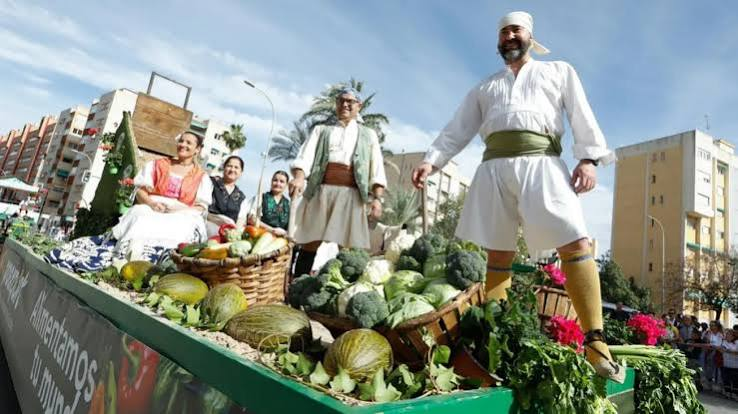
Bando de la Huerta de Murcia Un martes al año Murcia entera huele a tierra de huerta. -
 Bodas de Isabel de Segura Cuatro días para contar la leyenda de amor más triste de Aragón.
Bodas de Isabel de Segura Cuatro días para contar la leyenda de amor más triste de Aragón. -
 Caballos del Vino de Caravaca de la Cruz Un año bordando para ocho segundos de carrera cuesta arriba.
Caballos del Vino de Caravaca de la Cruz Un año bordando para ocho segundos de carrera cuesta arriba. -
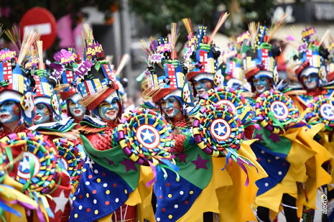
Carnaval de Badajoz Comparsas de escala latinoamericana y los Artefactos, únicos en España. -
 Carnaval de Cádiz La voz del pueblo hecha copla y sátira.
Carnaval de Cádiz La voz del pueblo hecha copla y sátira. -
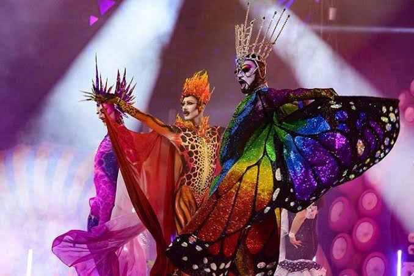
Carnaval de Las Palmas de Gran Canaria Purpurina, murgas y la pionera Gala Drag Queen. -
 Carnaval de Santa Cruz de Tenerife Donde la calle se disfraza de libertad.
Carnaval de Santa Cruz de Tenerife Donde la calle se disfraza de libertad. -
 Carnaval de Águilas La Musona, la Cuerva y el Carnaval de la Noche.
Carnaval de Águilas La Musona, la Cuerva y el Carnaval de la Noche. -
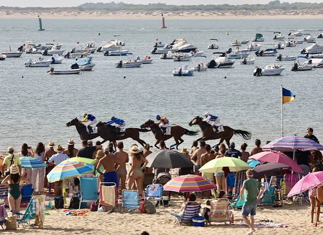
Carreras de Caballos en la Playa de Sanlúcar de Barrameda El hipódromo más antiguo de España lo construye el mar con cada bajamar. -
 Carthagineses y Romanos de Cartagena La ciudad que fue el centro del mundo revive la guerra que lo cambió.
Carthagineses y Romanos de Cartagena La ciudad que fue el centro del mundo revive la guerra que lo cambió. -
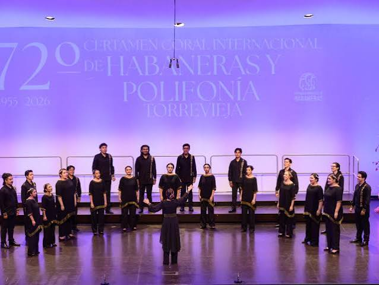
Certamen de Habaneras de Torrevieja La ciudad que adoptó Cuba en el siglo XIX lleva 72 años sin parar de cantar. -
Corpus Christi de Béjar La leyenda que camina junto a la Custodia.
-
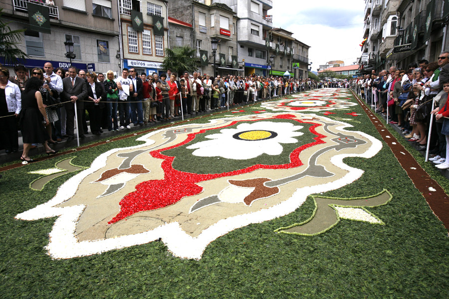
Corpus Christi de Ponteareas Un pueblo entero dibujando con flores en la madrugada. -
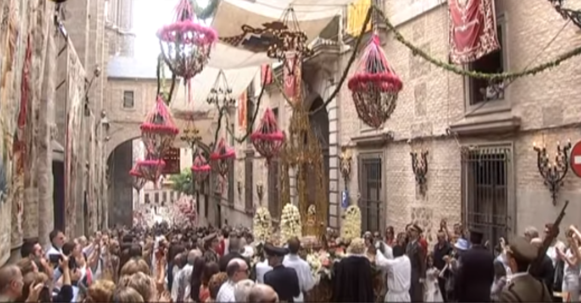
Corpus Christi de Toledo Oro, incienso y siete siglos que no pasan. -
Descenso Internacional del Sella — Fiesta de las Piraguas El cañonazo, el silencio y 900 piraguas golpeando el agua a la vez.
-
 Domingo de Ramos de Elche Setenta mil palmas blancas bajo el sol levantino.
Domingo de Ramos de Elche Setenta mil palmas blancas bajo el sol levantino. -
 El Cascamorras de Baza y Guadix Lleva más de 530 años intentándolo. Nunca lo ha conseguido.
El Cascamorras de Baza y Guadix Lleva más de 530 años intentándolo. Nunca lo ha conseguido. -
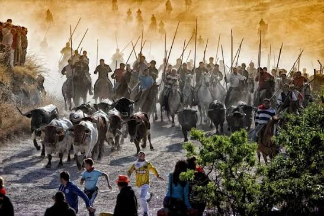
Encierros de Cuéllar Los más antiguos de España. Cinco kilómetros de pinar, El Embudo y murallas mudéjares. -
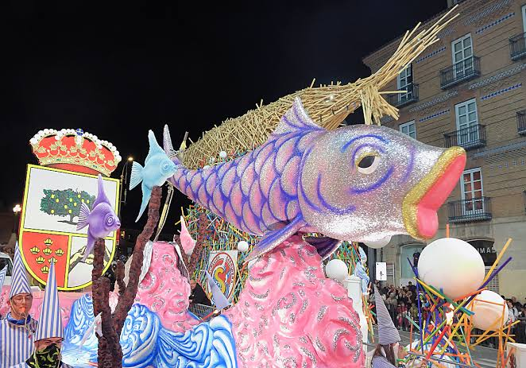
Entierro de la Sardina de Murcia Murcia entierra la Cuaresma con dioses olímpicos, un dragón y fuego. -
 Entrada de Toros y Caballos de Segorbe Cuarenta segundos. Sin barreras. Desde el siglo XIV.
Entrada de Toros y Caballos de Segorbe Cuarenta segundos. Sin barreras. Desde el siglo XIV. -
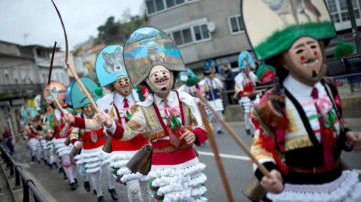
Entroido de Xinzo de Limia La Pantalla y el ciclo ininterrumpido de 5 domingos. -
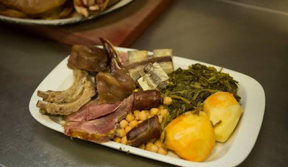
Feira do Cocido de Lalín El cocido más rotundo de Galicia, con un mes entero dedicado a él. -
 Feria de Abril de Sevilla El Real, la Portada y más de mil casetas junto al Guadalquivir.
Feria de Abril de Sevilla El Real, la Portada y más de mil casetas junto al Guadalquivir. -
 Feria de Albacete Once días en La Sartén, el único recinto ferial permanente de piedra de España.
Feria de Albacete Once días en La Sartén, el único recinto ferial permanente de piedra de España. -
 Feria del Caballo de Jerez Casetas abiertas a todos, caballos y los vinos del Marco de Jerez.
Feria del Caballo de Jerez Casetas abiertas a todos, caballos y los vinos del Marco de Jerez. -
Festival Internacional do Mundo Celta de Ortigueira El mayor festival de folk del mundo celta en España, gratuito desde 1978.
-
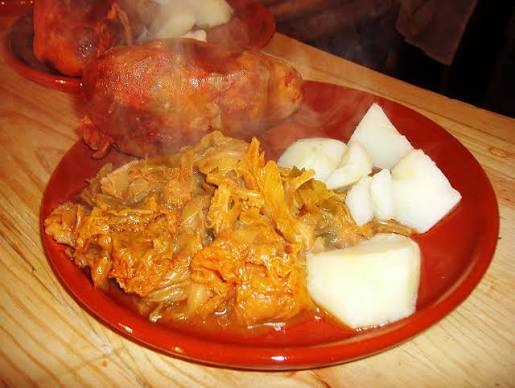
Festival del Botillo de Bembibre 1.200 comensales a la misma mesa. El banquete de invierno del Bierzo. -
 Festival del Cante de las Minas El concurso de flamenco más prestigioso del mundo. Nació en los pozos.
Festival del Cante de las Minas El concurso de flamenco más prestigioso del mundo. Nació en los pozos. -
 Festividad del Apóstol Santiago El Botafumeiro, la Ofrenda Nacional y los Fuegos del Apóstol.
Festividad del Apóstol Santiago El Botafumeiro, la Ofrenda Nacional y los Fuegos del Apóstol. -
 Fiesta de la Lamprea de Arbo El pez del Miño cocinado con su propia sangre.
Fiesta de la Lamprea de Arbo El pez del Miño cocinado con su propia sangre. -
 Fiesta de la Vendimia de Jerez Dieciséis días dedicados al vino, sin casetas ni caballos.
Fiesta de la Vendimia de Jerez Dieciséis días dedicados al vino, sin casetas ni caballos. -
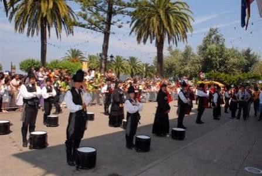
Fiesta del Albariño de Cambados La fiesta de vino más antigua de Galicia. Una apuesta de 1953, el Capítulo Serenísimo y 150.000 visitantes. -
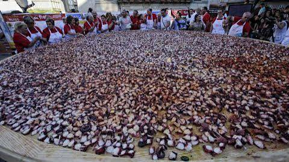
Fiesta del Pulpo de O Carballiño 80.000 kilos de pulpo á feira a la sombra del río Arenteiro. -
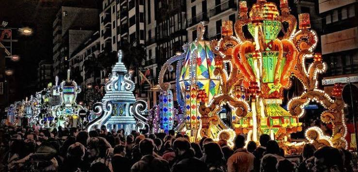
Fiestas de la Magdalena de Castellón 19 monumentos de luz y 165.000 personas subiendo al cerro donde nació la ciudad. -
Fiestas de la Purísima Concepción de Yecla En Yecla, la devoción huele a pólvora desde 1642.
-
 Fiestas del Motín de Aranjuez 170 vecinos recrean la noche en que el pueblo de Aranjuez cambió la historia de España.
Fiestas del Motín de Aranjuez 170 vecinos recrean la noche en que el pueblo de Aranjuez cambió la historia de España. -
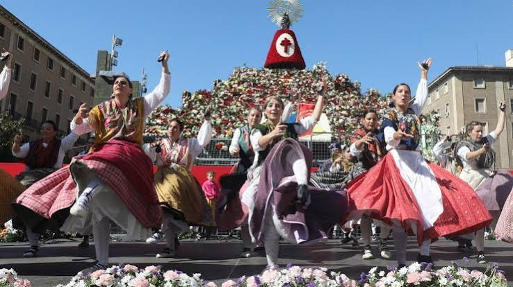
Fiestas del Pilar de Zaragoza Un manto de flores de 200 metros para la Virgen del Pilar. -
 Fira de Tots Sants de Cocentaina Desde 1346. El mismo privilegio. El mismo balcón.
Fira de Tots Sants de Cocentaina Desde 1346. El mismo privilegio. El mismo balcón. -
 Guerras Cántabras de Los Corrales de Buelna La única guerra que obligó a Augusto a venir en persona.
Guerras Cántabras de Los Corrales de Buelna La única guerra que obligó a Augusto a venir en persona. -
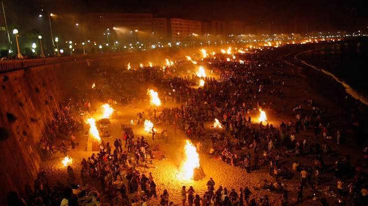
Hogueras de San Juan de A Coruña La Noite da Queima más grande de Galicia. La Falla Mayor, 150.000 personas y el arco de fuego sobre el Atlántico. -
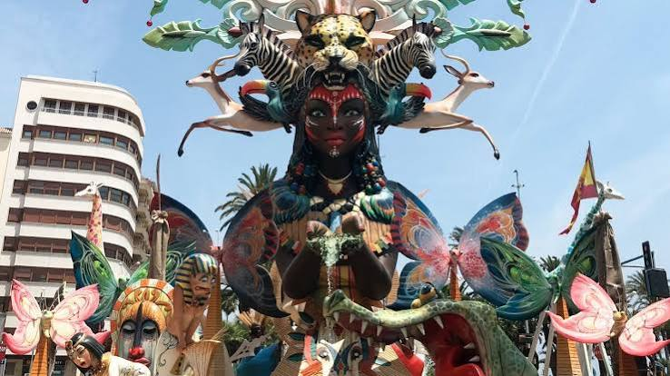
Hogueras de San Juan de Alicante La ciudad que planta 184 monumentos para verlos arder en una noche. -
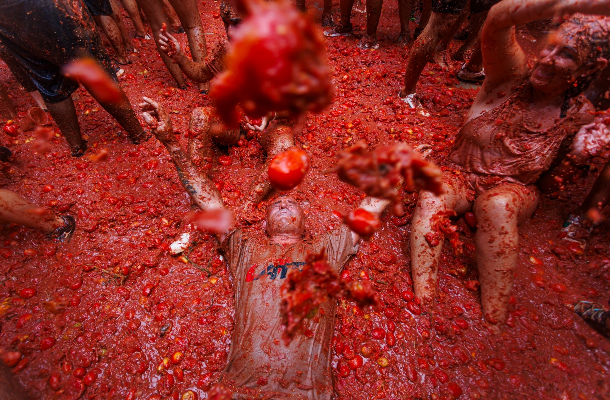
La Tomatina de Buñol La batalla de tomates más famosa del mundo, un miércoles de agosto. -
 Las Fallas de Valencia Monumentos de arte efímero, mascletàs y la Cremà final.
Las Fallas de Valencia Monumentos de arte efímero, mascletàs y la Cremà final. -
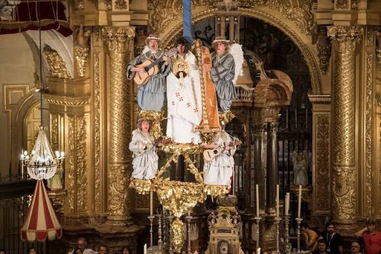
Misteri d'Elx La única ópera medieval de Europa que nunca dejó de sonar. -
 Moros y Cristianos de Alcoi Donde nació la tradición que se extendió por el mundo.
Moros y Cristianos de Alcoi Donde nació la tradición que se extendió por el mundo. -
Moros y Cristianos de Almansa Bajo el castillo que vio cambiar la historia.
-
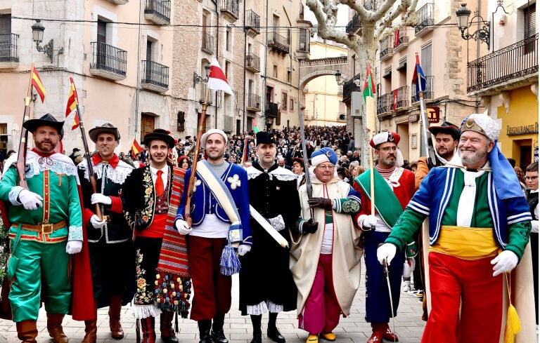
Moros y Cristianos de Bocairent La fiesta del invierno, la manta y Sant Blai. -
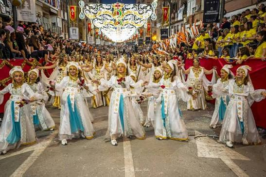
Moros y Cristianos de Caravaca de la Cruz La devoción a la Vera Cruz hecha batalla, desfile y embajada. -
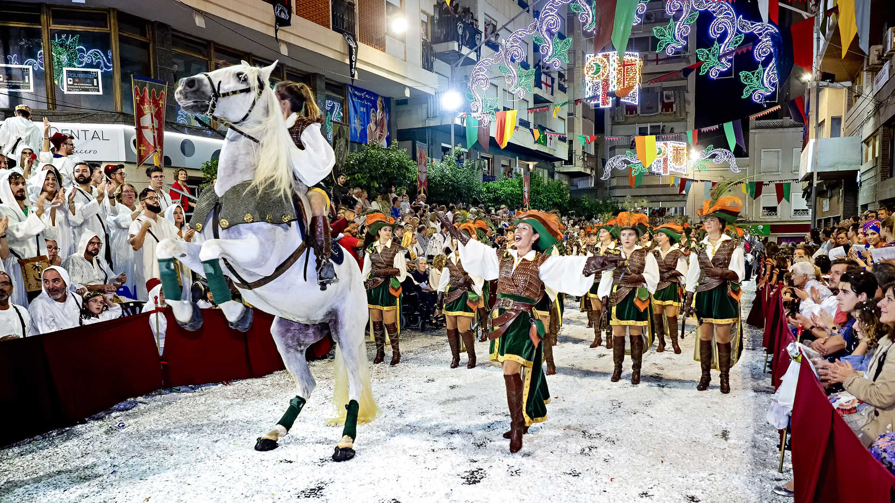
Moros y Cristianos de Crevillent Vasallaje histórico y pacto pacífico en el Baix Vinalopó. -
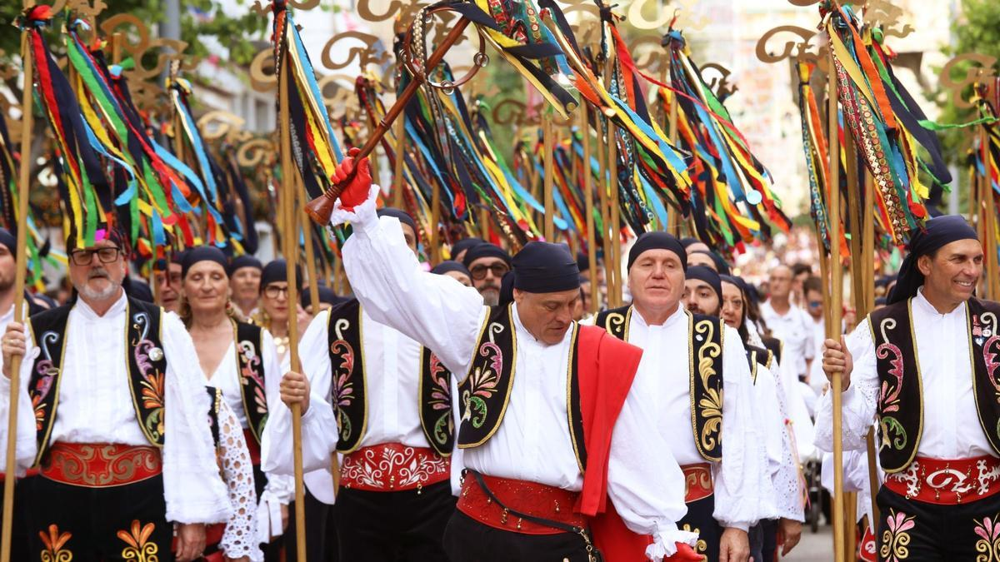
Moros y Cristianos de Elda Más de 7.000 festeros y devoción a San Antón. -
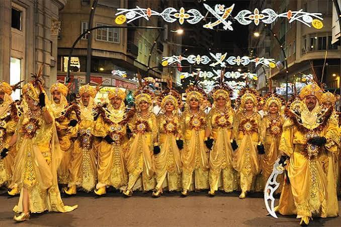
Moros y Cristianos de Murcia Un campamento entero junto al Segura recrea la fundación de la ciudad. -
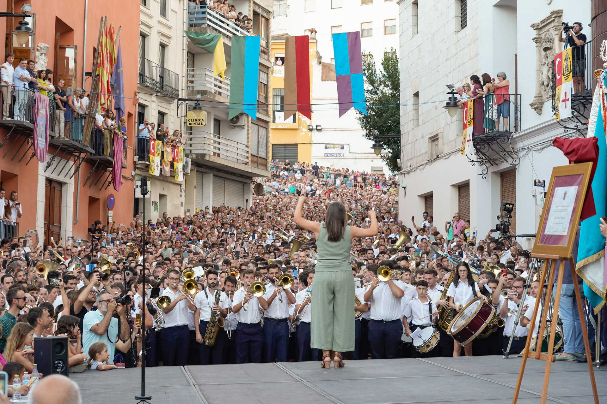
Moros y Cristianos de Ontinyent 24 comparsas, la Bajada del Cristo y las Embajadas de 1860. -
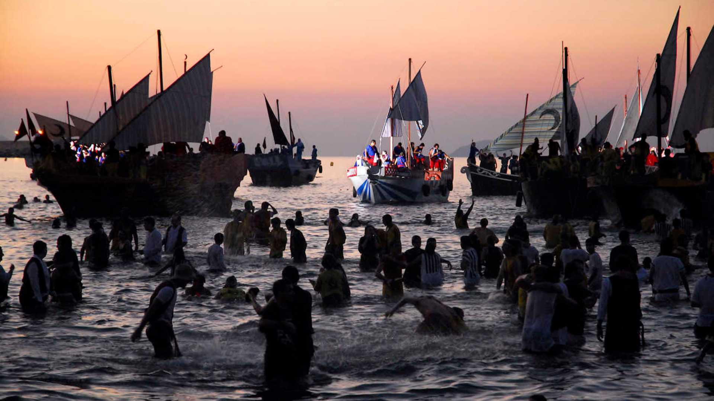
Moros y Cristianos de Villajoyosa Cuando el mar se convierte en campo de batalla. -
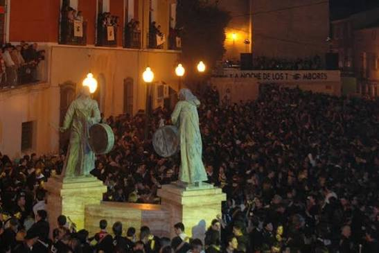
Noche de los Tambores de Mula Dieciséis horas. Sin parar. Sin jerarquía. Sin imágenes. -
Otoño Mágico del Valle del Ambroz Ocho pueblos, siete fines de semana y los bosques en ocre.
-
 Rapa das Bestas de Sabucedo Tres aloitadores. Un caballo. Sin cuerdas.
Rapa das Bestas de Sabucedo Tres aloitadores. Un caballo. Sin cuerdas. -
 Romería Vikinga de Catoira Cada agosto el Ulla vuelve a tener miedo.
Romería Vikinga de Catoira Cada agosto el Ulla vuelve a tener miedo. -
 Romería del Rocío Un millón de peregrinos hacia la Blanca Paloma.
Romería del Rocío Un millón de peregrinos hacia la Blanca Paloma. -
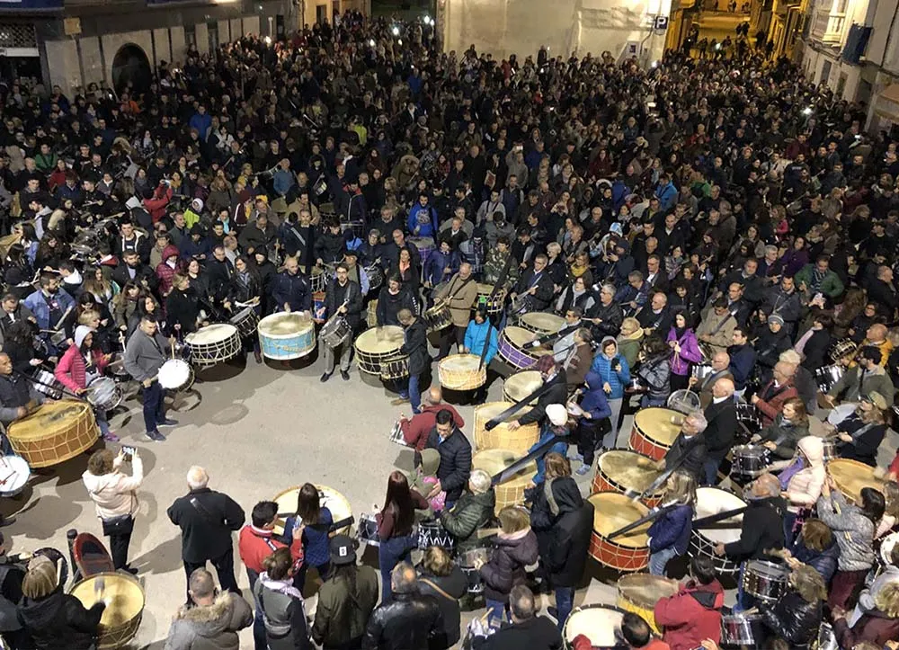
Ruta del Tambor y el Bombo Cuando el Bajo Aragón rompe la hora. -
Sanfermines de Pamplona Encierro, Chupinazo y 16 peñas con sus txarangas.
-
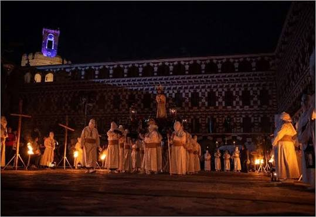
Semana Santa de Badajoz Costaleros, madrugadas y el Muñidor del siglo XVI. -
 Semana Santa de Baena El pueblo que reza a golpe de tambor.
Semana Santa de Baena El pueblo que reza a golpe de tambor. -
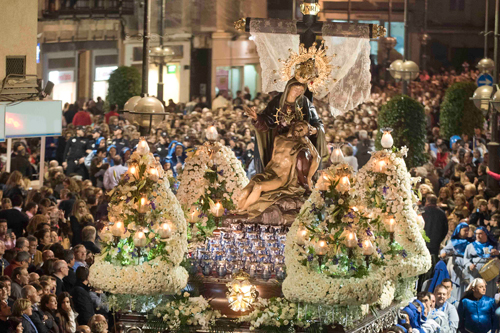
Semana Santa de Cartagena Diez días de orden, luces y tradición militar en el Mediterráneo. -
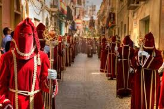
Semana Santa de Cieza Pasión en la calle, escultura levantina y el eco de los Armaos. -
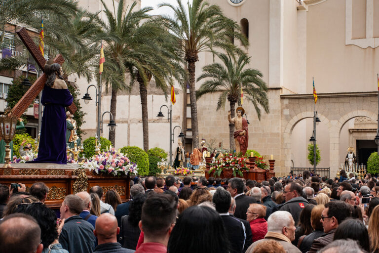
Semana Santa de Crevillent El genio de Benlliure mecido por el canto polifónico. -
 Semana Santa de Cuenca Pasión vertical entre hoces, silencios y tambores roncos.
Semana Santa de Cuenca Pasión vertical entre hoces, silencios y tambores roncos. -
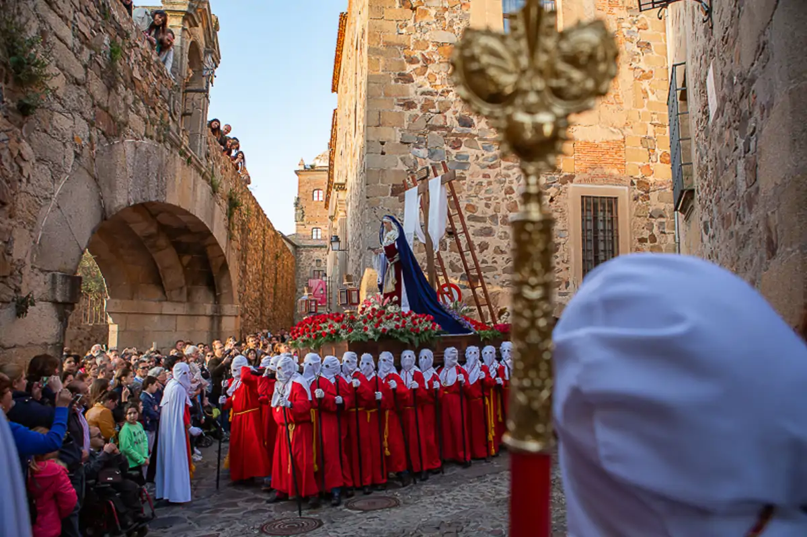
Semana Santa de Cáceres Piedra, silencio y cera en la penumbra. -
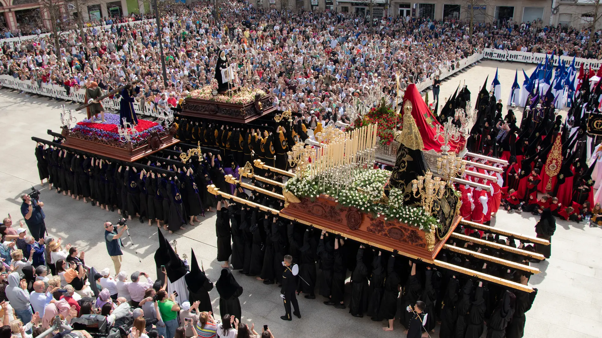
Semana Santa de Ferrol Sobriedad, mar y silencio en las calles ilustradas. -
 Semana Santa de Granada Pasión entre el Albaicín, el Sacromonte y la Alhambra.
Semana Santa de Granada Pasión entre el Albaicín, el Sacromonte y la Alhambra. -
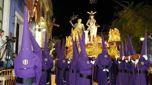
Semana Santa de Jumilla Más de seiscientos años de fe entre túnicas y viñedos. -
 Semana Santa de León El latido del tambor y el orgullo del papón.
Semana Santa de León El latido del tambor y el orgullo del papón. -
Semana Santa de Lorca Donde el bordado se hace piel y la historia galopa.
-
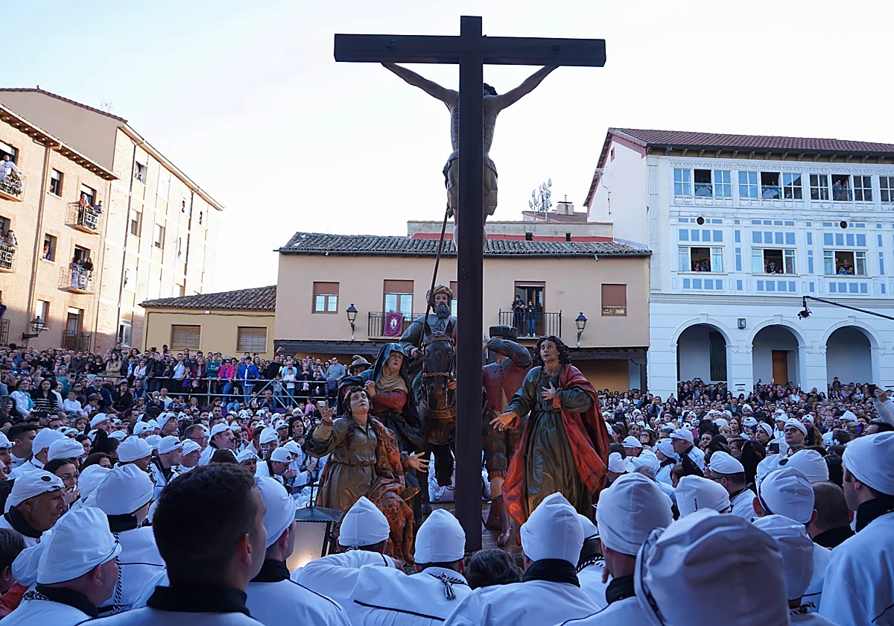
Semana Santa de Medina de Rioseco Madera al hombro, silencio y emoción castellana. -
Semana Santa de Medina del Campo Silencio castellano bajo cera y piedra antigua.
-
Semana Santa de Murcia El genio de Salzillo esculpido en la tradición huertana.
-
 Semana Santa de Málaga Fe, arte y emoción en cada trono.
Semana Santa de Málaga Fe, arte y emoción en cada trono. -
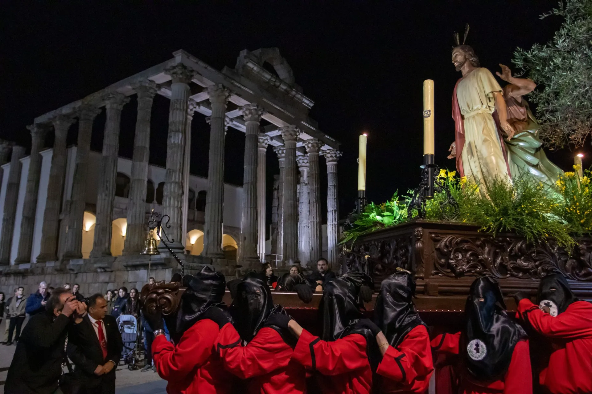
Semana Santa de Mérida La Pasión de Cristo sobre la piedra de Roma. -
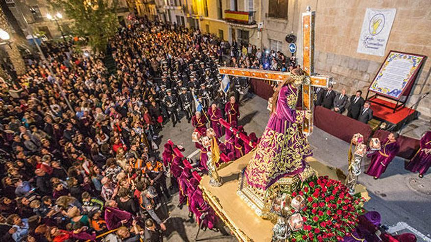
Semana Santa de Orihuela Un museo en la calle bañado de incienso y fervor. -
 Semana Santa de Palencia Silencio roto por el lamento del Tararú.
Semana Santa de Palencia Silencio roto por el lamento del Tararú. -
 Semana Santa de Salamanca Piedra viva, silencio estremecedor y pasión bajo el cielo charro.
Semana Santa de Salamanca Piedra viva, silencio estremecedor y pasión bajo el cielo charro. -
 Semana Santa de Sevilla Donde la fe se hace arte y el arte sale a la calle.
Semana Santa de Sevilla Donde la fe se hace arte y el arte sale a la calle. -
 Semana Santa de Toledo El silencio bajo los cobertizos.
Semana Santa de Toledo El silencio bajo los cobertizos. -
 Semana Santa de Valladolid Un museo de madera policromada bajo el cielo de Castilla.
Semana Santa de Valladolid Un museo de madera policromada bajo el cielo de Castilla. -
 Semana Santa de Viveiro Tambores de pasión y silencio en A Mariña.
Semana Santa de Viveiro Tambores de pasión y silencio en A Mariña. -
 Semana Santa de Zamora Un museo románico donde el silencio, el frío y el canto desgarran el alma.
Semana Santa de Zamora Un museo románico donde el silencio, el frío y el canto desgarran el alma. -
 Semana Santa de Zaragoza Cuatro mil metros de pasión a golpe de bombo y tambor.
Semana Santa de Zaragoza Cuatro mil metros de pasión a golpe de bombo y tambor. -
Semana Santa de Ávila Piedra, silencio y fe al abrigo de la muralla medieval.
-
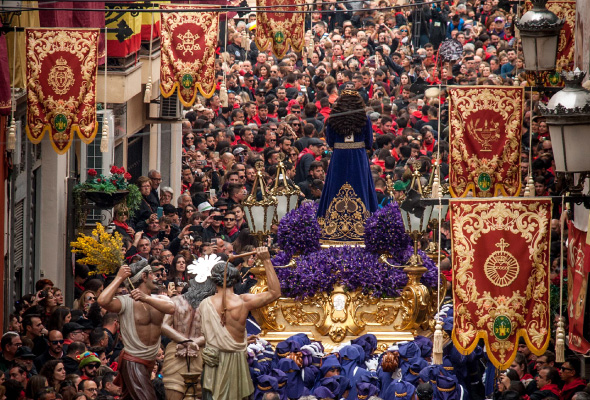
Semana Santa y Tamborada de Hellín Donde la fe camina a hombros y el suelo retumba.
No hay ninguna fiesta que cumpla las tres condiciones a la vez. Prueba a soltar alguna.